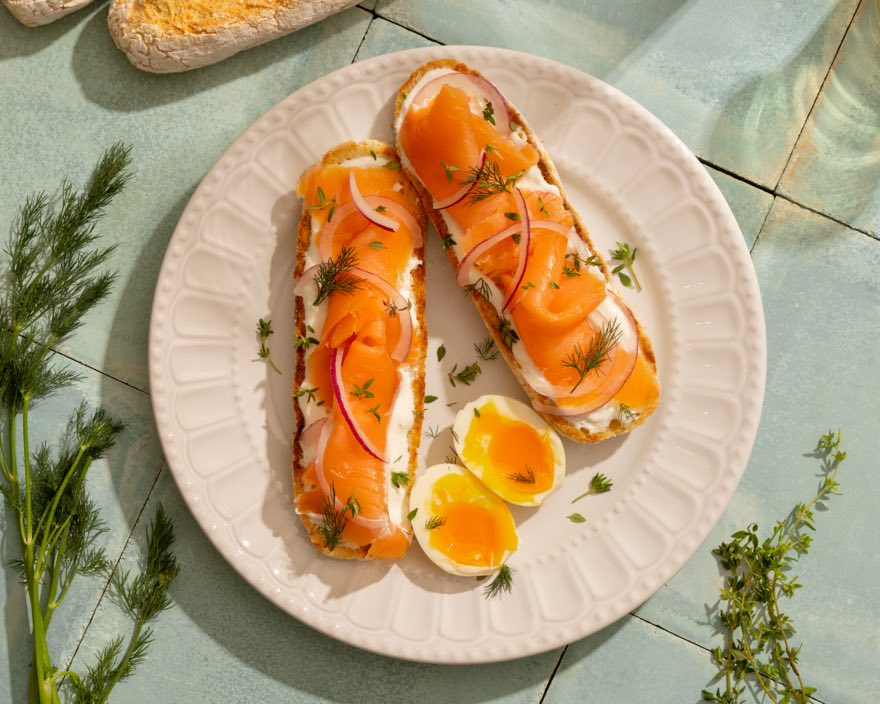

Si no es divino, no es True Food
Delicioso, saludable y Gluten Free, en ese orden. Te contamos por qué nuestro mantra empieza por el sabor y cómo se vive en cada producto True Food.

True Food nació con una idea fija: hacer comida Gluten Free que se disfrute de verdad. No la versión “aceptable”, no la que cumple. La que te hace volver a la cocina por otra.
Cuando nos sentamos a definir qué queríamos que fuera la marca, nos salieron tres palabras, y nos salieron en un orden que no hemos cambiado desde entonces: delicioso, saludable y Gluten Free.
Primero, realmente delicioso
Esta es la regla que manda sobre todas las demás, y aplica a todo lo que sale de nuestra panadería. Antes de pensar en ingredientes, etiquetas o sellos, nos hacemos una sola pregunta: ¿esto es realmente delicioso?
Si la respuesta es “más o menos”, no sale. Probamos, ajustamos y volvemos a probar hasta que cada producto llega a donde tiene que estar: el pan suave por dentro y crujiente por fuera, los buns esponjosos y bien tostaditos, la pizza crust con borde dorado y base firme para cargarla como quieras, y las galletas recién horneadas, doraditas por fuera y cremosas en el centro. Por eso lo decimos sin rodeos: si no es divino, no es True Food.
Después, saludable
Para nosotras, saludable no es comer menos ni comer aburrido. Es cuidar lo que va adentro. Y aquí hay algo que nos importa mucho: los ingredientes que evitamos son tan importantes como los que usamos.
Escogemos ingredientes de calidad, los mejores que podemos conseguir, y dejamos fuera lo que no aporta. Nuestros productos no tienen conservantes artificiales ni aditivos para alargar la vida útil. En vez de eso, preferimos congelarlos: el frío hace ese trabajo y el producto espera en tu congelador, listo para cuando lo quieras hornear.
Al final, se trata de comer bien y sentirte bien, sin tener que escoger entre una cosa y la otra.
Y también, Gluten Free
Todos nuestros productos son Gluten Free, y no por moda. Es una decisión consciente que tomamos desde el primer día, para quienes lo necesitan y para quienes simplemente quieren sentirse bien con lo que comen.
Y como es una decisión que nos tomamos en serio, la respaldamos: contamos con la certificación GFFP, un sello que verifica que lo que decimos en el empaque se cumple en cada producto. Así puedes servir True Food en la mesa con toda la confianza, sin que nadie se quede viendo el pan de lejos.
Por qué el orden importa
Si algo no es rico, lo demás no importa: nadie repite una tostada por la etiqueta. Por eso el sabor va primero, la calidad lo acompaña y el Gluten Free viene incluido, sin cobrarte nada en sabor.
Ese orden es nuestro filtro para todo: cada receta nueva, cada ajuste en la panadería, cada producto que decidimos sacar.
Cómo se ve el mantra en tu casa
Se ve en una tostada de Pan Blanco con mantequilla derritiéndose un lunes cualquiera. En un Pan de Semillas con aguacate. En un Pan Francés hecho bruschetta para una cena que parece más elaborada de lo que fue. En unos Buns bien tostaditos el viernes de hamburguesas. En una Pizza Crust que pasa del congelador al horno cuando a todo el mundo le da hambre al mismo tiempo. Y en un pote de Galletas para hornear cuando el antojo dulce llega sin avisar.
Como todo vive en el congelador, lo tienes listo cuando se te antoje, no solo el día que vas al súper.
Nos encuentras en los congeladores de Auto Mercado, Walmart, Más x Menos, MegaSuper, BM y Compre Bien. Pruébalo y nos cuentas. Ya sabes la regla: si no es divino, no es True Food.